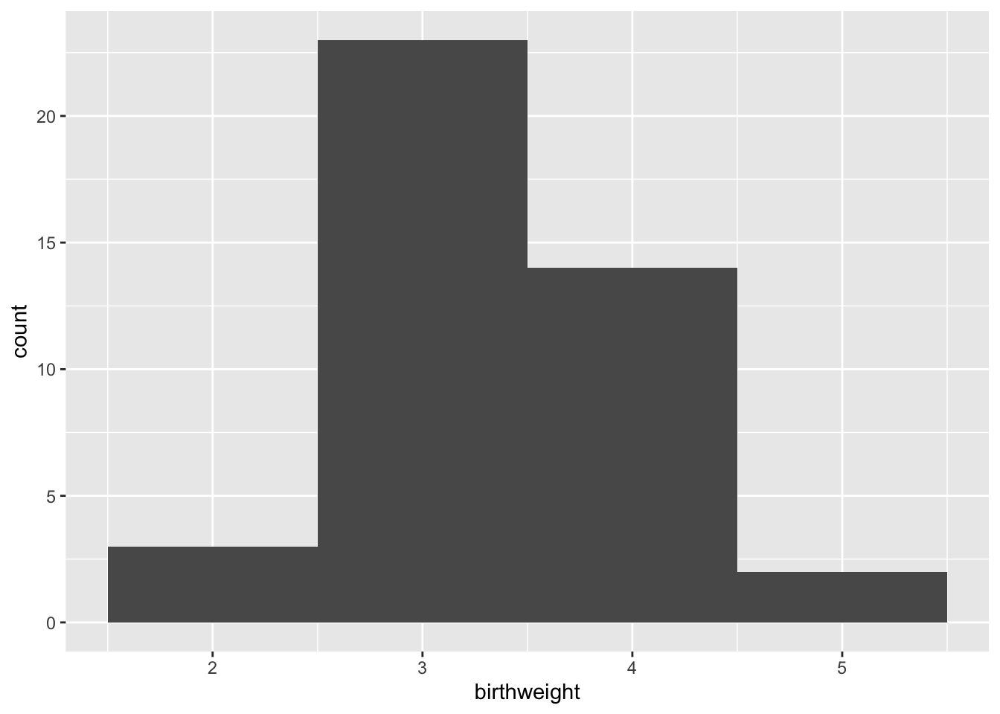
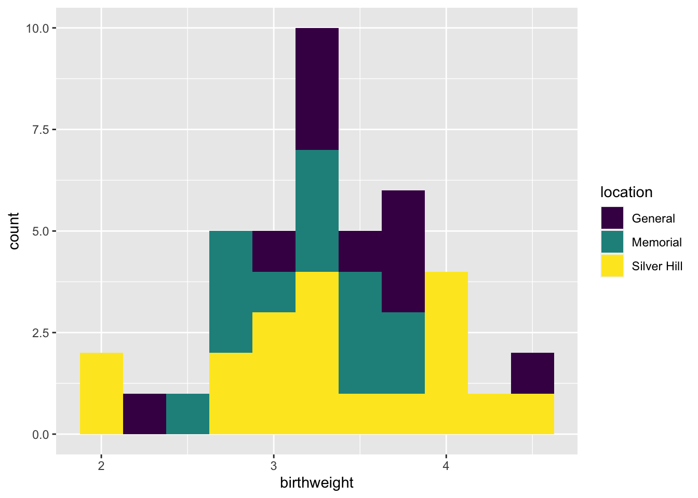
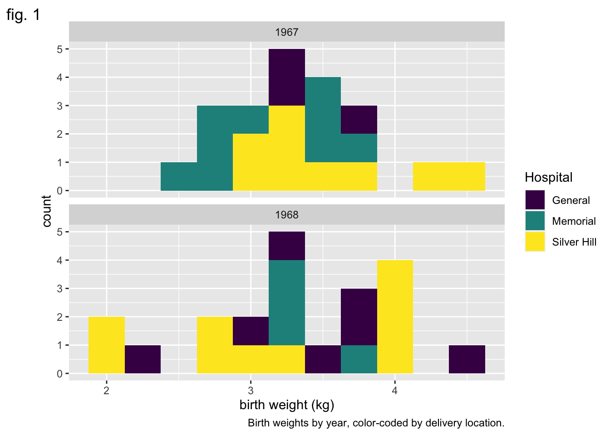
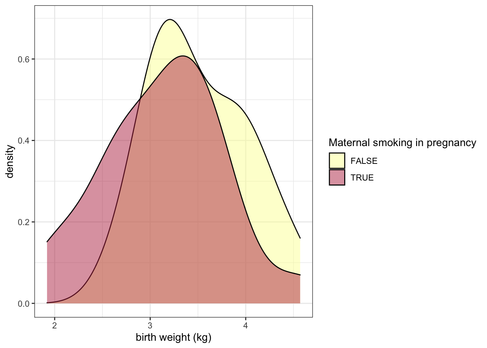
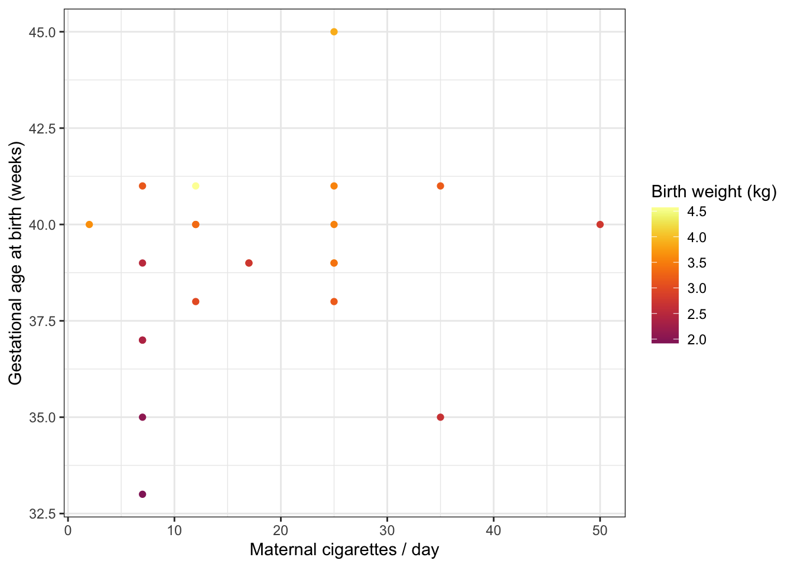

8 Visualizations
The ggplot2 library is an extremely popular visualization package that provides an interface for extremely fine control over graphics for plotting. It is used by a number of of other popular packages in their built-in plotting functions. It provides a “grammar of graphics” that is quite useful to know.
A note about accessibility:
The default colors automatically selected by ggplot2 are not very user-friendly. Colors are chosen by sampling evenly spaced hues on the color wheel. Because of this behavior, all of the colors have similar intensity, which means that they do not work well when printed in gray-scale, and may be difficult to distinguish for users with atypical color vision. There are many resources for selecting color palettes online. Here are just a few:
In this documentation we will be using four palettes generated using the viridis library.
## Loading required package: viridisLite## Help on topic 'viridis' was found in the following packages:
##
## Package Library
## viridis /Library/Frameworks/R.framework/Versions/4.1-arm64/Resources/library
## viridisLite /Library/Frameworks/R.framework/Versions/4.1-arm64/Resources/librarylocations.palette <- viridis(3)
smoking.palette <- inferno(2, begin = 0.5, direction = -1)
years.palette <- mako(2, begin = 0.4, end = 0.9, direction = -1)
genes.palette <- plasma(4)As we go through this plotting section, we will pause several times to allow you to explore. Don’t limit yourself to the visualizations included! Experiment with manipulating each of the elements of the plots to accheive interesting and informative graphics.
8.1 The ggplot() function
The basic function of the ggplot2 library is ggplot().
It is capable of taking a lot of arguments and options, but requires only two: an object (typically a data frame) containing the data, and a list of “aesthetic mappings” that tell R which values to use for the axes, colors, and other graphical elements of the plot.
Alone, this produces an empty plot. The ggplot() function by itself creates the blank canvas upon which the plot will be drawn. The plot elements are added to this canvas in layers called “geoms.”
8.2 The geom
There are over 30 geoms in the ggplot2 library, each of which accepts a particular set of aesthetic mappings. The geoms inherit the mapping specified in the original ggplot() function call, and additional layer-specific aesthetics may be specified within the geom. Let’s start with one of the simplest geoms, the histogram.
The geom_histogram() function requires, at a minimum, that a value be provided for x.
## `stat_bin()` using `bins = 30`. Pick better value with `binwidth`.Setting the “binwidth” parameter within the geom_histogram() call changes the appearance of the plot and eliminates the message.

8.3 Adding color (and fill) to geoms
The color (for lines and points) and fill (for areas, like bars) of a geom can add another layer of information to the plot.
ggplot(data = experiment, mapping = aes(x = birthweight, fill = location)) +
geom_histogram(binwidth = 0.25) +
scale_fill_manual(values = locations.palette) 
Here the total height of the bar is equal to the number of births at each weight, and the fill denotes the hospital at which the birth occured.
8.4 Creating faceted plots
Sometimes, it may be more clear graphically to create multiple sub-plots or “facets” based on categorical values in the data. The facet_wrap() and facet_grid() functions allow the user to break the data down into multiple plots by one or two categorical variables, respectively.
8.5 Add and modify labels
Often, the aesthetic names (column names) are uninformative, or unattractive. This may not make much difference when making exploratory figures, but in a report or publication, it is important to have a greater degree of control over the plot title, axis labels, and so on. The labs() function offers the option to set the following labels:
- any aesthetic that has been set: in this case, x and fill
- title: main title of the plot
- subtitle: displayed below the title
- caption: displayed at the bottom right of the plot by default
- tag: label that appears at the top left of the plot by default (e.g. 1A)
- alt, alt_insight: alt text for the plot (used by screen readers)
ggplot(data = experiment, mapping = aes(x = birthweight, fill = location)) +
geom_histogram(binwidth = 0.25) +
scale_fill_manual(values = locations.palette) +
facet_wrap(~year, nrow = 2) +
labs(x = "birth weight (kg)",
fill = "Hospital",
tag = "fig. 1",
caption = "Birth weights by year, color-coded by delivery location.",
alt = "Pair of histograms displaying the distribution of birth weights of infants born at General Hospital, Memorial Hospital, and Silver Hill Medical Center in 1967 and 1968.")
8.6 Making global changes to the plot’s appearance using themes
The “theme” of a ggplot object controls the graphical elements that are not mapped onto the data. This includes things like the font size and alignment of axis labels and the color of the plot background. There are a number of pre-set themes offering a range of plot styles.
In addition, the theme() function offers access to these graphical elements independently. Using it, you can change the angle of the text on the x axis, the placement of the legend, and many other things. Here, we will use it to remove the legend title.
ggplot(data = experiment, mapping = aes(x = birthweight, fill = location)) +
geom_histogram(binwidth = 0.25) +
scale_fill_manual(values = locations.palette) +
facet_grid(location~year) +
labs(x = "weight (kg)", y = "births") +
theme_bw() +
theme(legend.title = element_blank())An interesting alternative to geom_histogram() is geom_density().
ggplot(data = experiment, mapping = aes(x = birthweight, fill = smoker)) +
geom_density(alpha = 0.5) +
scale_fill_manual(values = smoking.palette) +
labs(x = "birth weight (kg)", fill = "Maternal smoking in pregnancy") +
theme_bw()
The alpha channel of a color determines its opacity. In this case, we have placed alpha = 0.5 outside of the aes() function call, because the opacity is not being mapped to any characteristic of the data.
The examples above use color in a discrete fashion. In the scatter plot below, the color of each point represents a birth weight (continuous variable).
experiment %>%
filter(smoker == TRUE) %>%
ggplot(mapping = aes(x = maternal.cigarettes,
y = weeks.gestation,
color = birthweight)) +
geom_point() +
labs(x = "Maternal cigarettes / day", y = "Gestational age at birth (weeks)", color = "Birth weight (kg)") +
scale_color_viridis(option = "inferno", begin = 0.4) +
theme_bw()
Notice that it is not necessary to specify a color palette; viridis has a built-in function for interacting with ggplot objects.
8.7 Change the labels for categorical values
All of the elements of the plot, not just the height of bars and position of points, convey information. The labels on a categorical axis should be meaningful.
experiment %>%
ggplot(mapping = aes(x = smoker, y = birthweight, fill = smoker)) +
geom_boxplot() +
scale_fill_manual(values = smoking.palette) +
theme_bw()The bar chart above displays the values “TRUE” and “FALSE” on the x-axis. This is fine for an exploratory plot, but in a report or publication, it might be more informative to replace them with “smoker” and “non-smoker.” The scale_x_discrete() function allows us to do just that.
experiment %>%
ggplot(mapping = aes(x = smoker, y = birthweight, fill = smoker)) +
geom_boxplot() +
scale_fill_manual(values = smoking.palette) +
scale_x_discrete(labels = c("non-smoker", "smoker")) +
guides(fill = "none") +
labs(y = "birth weight (kg)", x = "maternal cigarette use in pregnancy") +
theme_bw()8.8 Change the direction of axes to improve readability
If the category names are very long, it may be necessary to change the direction of the axis labels.
experiment %>%
ggplot(mapping = aes(x = smoker, y = birthweight, fill = smoker)) +
geom_boxplot() +
scale_fill_manual(values = smoking.palette) +
scale_x_discrete(labels = c("non-smoking in pregnancy", "cigarette smoking in pregnancy")) +
guides(fill = "none") +
labs(y = "birth weight (kg)") +
theme_bw() +
theme(axis.title.x = element_blank(),
axis.text.x = element_text(angle = 90, vjust = 0.5, hjust = 1))Or even the direction of the axes themselves.
experiment %>%
ggplot(mapping = aes(x = smoker, y = birthweight, fill = smoker)) +
geom_boxplot() +
scale_fill_manual(values = smoking.palette) +
scale_x_discrete(labels = c("non-smoking in pregnancy", "cigarette smoking in pregnancy")) +
guides(fill = "none") +
labs(y = "birth weight (kg)") +
coord_flip() +
theme_bw() +
theme(axis.title.y = element_blank())8.9 The pivot_longer() function revisited
In the previous section on Tidyverse, pivot_longer() was only briefly discussed. This is because the easiest way to explain why changing the shape of a data set to create fewer, longer columns is useful is to demonstrate.
experiment %>%
pivot_longer(cols = c(22:25),
names_to = "gene.id",
values_to = "expression") %>%
ggplot(mapping = aes(x = smoker, y = expression, fill = smoker)) +
geom_violin() +
scale_fill_manual(values = smoking.palette) +
scale_x_discrete(labels = c("non-smoker", "smoker")) +
facet_wrap(~ gene.id, nrow = 2) +
guides(fill = "none") +
labs(x = "Maternal tobacco use in pregnancy", y = "miRNA expression") +
theme_bw()
After pivoting the miRNA data into a single column called expression, that data is available for ggplot to map that onto an aesthetic property.
8.10 Use shape and line type to convey meaning
Color is not the only aesthetic available for mapping to the data. Shape and line type are also good candidates for displaying categorical (or discrete) values.
experiment %>%
pivot_longer(cols = c(22:25),
names_to = "gene.id",
values_to = "expression") %>%
ggplot(mapping = aes(x = maternal.cigarettes, y = expression, color = location, shape = low.birthweight)) +
geom_point() +
scale_color_manual(values = locations.palette) +
scale_shape_manual(values = c(16, 17), labels = c("< 2.72 kg", ">= 2.72 kg")) +
facet_wrap(~ gene.id, nrow = 2) +
labs(x = "Maternal cigarettes / day", y = "miRNA expression") +
theme_bw() +
theme(legend.title = element_blank())There are 25 shapes available for plotting. You can see them all here.
experiment %>%
ggplot(mapping = aes(x = weeks.gestation, y = birthweight, linetype = smoker)) +
geom_quantile(quantiles = c(0.25, 0.5, 0.75), color = "black") +
labs(x = "gestational age at birth", y = "birth weight (kg)", linetype = "geriatric preganancy") +
theme_bw()## Smoothing formula not specified. Using: y ~ x
## Smoothing formula not specified. Using: y ~ x8.11 Focus in on one portion of the plot
We can zoom in to the the lower left hand corner of the plot using coord_cartesian().
experiment %>%
ggplot(mapping = aes(x = weeks.gestation, y = birthweight, linetype = smoker)) +
geom_quantile(quantiles = c(0.25, 0.5, 0.75), color = "black") +
labs(x = "gestational age at birth", y = "birth weight (kg)", linetype = "geriatric preganancy") +
coord_cartesian(xlim = c(33, 35), ylim = c(1.5, 3.5)) +
theme_bw()## Smoothing formula not specified. Using: y ~ x
## Smoothing formula not specified. Using: y ~ x8.12 Layer multiple geoms
It is not necessary to make a single geom convey all of the information a plot must communicate. Instead, ggplot2 offers users the ability to layer geoms together. As long as they use the same axes, geoms may share a plot.
ggplot(experiment, mapping = aes(x = weeks.gestation,
y = birthweight,
color = smoker)) +
geom_point() +
geom_smooth(alpha = 0.2) +
labs(x = "Gestational age at birth (weeks)",
y = "Birth weight (kg)",
color = "Maternal tobacco use",
caption = "Birthweight increases with gestational age for infants born to both\nsmokers and non-smokers.") +
scale_color_manual(values = smoking.palette) +
theme_bw() +
theme(plot.caption = element_text(hjust = 0))## `geom_smooth()` using method = 'loess' and formula 'y ~ x'experiment %>%
group_by(year, smoker) %>%
summarise(mean.birthweight = mean(birthweight),
sd.birthweight = sd(birthweight)) %>%
ggplot(mapping = aes(x = as.factor(year), y = mean.birthweight, fill = smoker)) +
geom_col(position = position_dodge2(preserve = "single")) +
geom_errorbar(mapping = aes(ymin = mean.birthweight - sd.birthweight,
ymax = mean.birthweight + sd.birthweight),
position = position_dodge2(preserve = "single")) +
scale_fill_manual(values = smoking.palette) +
labs(x = "birth year", y = "birth weight (kg)", fill = "maternal smoking") +
theme_bw()## `summarise()` has grouped output by 'year'. You can override using the `.groups` argument.8.13 ggplot2 cheat sheet
For more information on ggplot2 check out this quick reference guide, and the free online book.